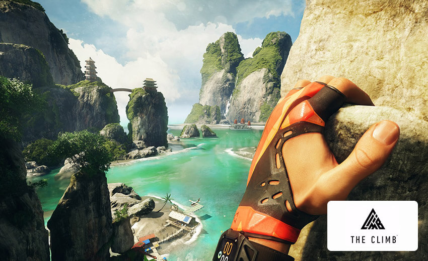
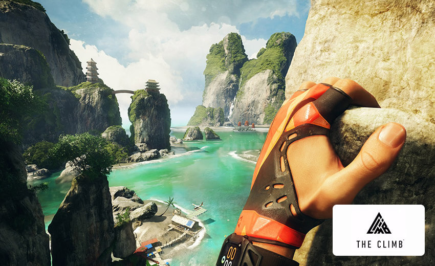
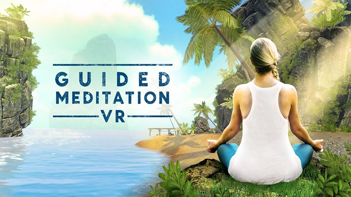
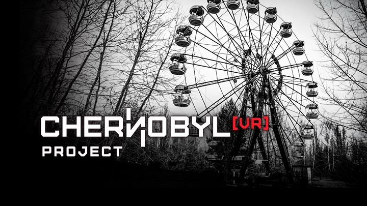
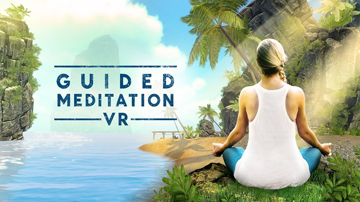
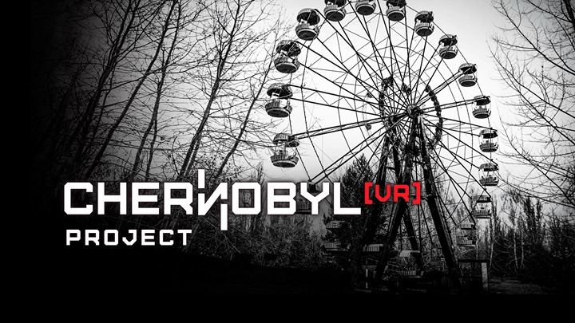

향상된 광학 기술을 통해 밝고 생생한 색감을 즐길 수 있으며 '스크린도어 효과'를 줄였습니다.

속도와 편안함을 위해 새롭게 디자인된 헤일로(Halo) 스타일 헤드밴드를 만나보세요.

휘두르고, 던지고, 잡는 동작이 직관적이고 사실적인 정확도로 VR에서 표현됩니다.
Touch 컨트롤러 2개
Oculus Touch 컨트롤러는 손동작과 제스처를 게임에 바로 반영합니다. 휘두르고, 던지고, 잡는 동작이 직관적이고 사실적인 정확도로 VR에서 표현됩니다.

최고의 VR 게임을 통해 현실감 넘치는 액션을 경험해보세요. Oculus 스토어에는 수백 개의 VR 게임과 독점 콘텐츠가 준비되어 있으며 앞으로도 계속 업데이트될 예정입니다.

빠른 속도를 즐길 수 있도록 새롭게 디자인된 헤일로(Halo) 스타일 헤드밴드의 장점입니다. Rift S는 빠르게 조정 가능한 조절 휠로 안전하고 편안하게 고정되므로 사용자의 가장 빠른 반응도 여러 번 섬세하게 캐치할 수 있습니다.

Oculus 인사이트 트래킹은 외부 센서 없이도 모든 방향의 움직임을 VR에 반영하고 룸스케일 트래킹을 제공합니다. 플레이 공간의 어디 에서나 주변을 돌아보고 몸을 숙여 숨기며 전투의 형세를 바꿔보세요.


 



레드, 척, 밤 그리고 블루와 함께 VR로 펼쳐지는 Angry Birds VR: Isle of Pigs에서 사라진 알을 구하세요!
탐욕스러운 녹색 돼지들이 재미난 75개 이상의 레벨에서 휴가를 보내는 외딴 섬을 탐험하세요! 이국적인 해변, 가파른 절벽, 눈 덮인 비탈을 통해 조용한 "휴가 모드"에서 파티의 도시로 향하고, 가장 멋진 방법으로 구조물을 파괴해서 중요한 별을 얻으세요. 일단 새로운 보스 돼지 Dr. Frankenswine이 자리를 잡으면, 훨씬 더 어려운 "으스스 모드" 게임에서 플레이를 펼치세요.
가격 ￦18,000
Rift 지원 | Rift S 지원 | Oculus Touch 지원 | 인터넷 연결 필요하지 않음
In Lone Echo’s single player story, you’ll be transported to an advanced mining facility within the rings of Saturn, complete with a detailed space station, expansive outer-space environments, and interactive space equipment. Taking on the role of Jack—an advanced artificial intelligence with a state-of-the-art synthetic body—you’ll help Captain Olivia Rhodes solve an increasingly threatening mystery as you use futuristic tools, clever problem solving, and interactive dialogue to engage with the world around you. Taking advantage of the Oculus Touch controllers and full 360° gameplay, Lone Echo lets you take a hands-on approach to exploring space unlike anything you’ve ever played before.
가격 Free
Rift 지원 | Rift S 지원 | Oculus Touch 지원 | 인터넷 연결 필요하지 않음
VR에서만 경험할 수 있는 신화 속 고대 스칸디나비아로 모험을 떠나 신들의 분노를 끌어내세요. 형언할 수 없는 깊이의 액션 롤플레잉 게임에서 현세의 영웅이자 살아있는 신으로서의 운명을 개척해나가세요.
VR에서만 가능한 혁신적인 전투 시스템을 통해 누구도 막을 수 없는 영웅들의 다양한 능력을 펼쳐보세요.
구입할 수 없음
죄송합니다. 현재 회원님의 국가에서 이용할 수 없습니다
끝이 보이지 않는 높이를 등반하며 익스트림 프리 솔로 클라이밍의 짜릿함을 느껴보세요. Touch 또는 게임패드 컨트롤을 이용하여 멋진 경관을 감상하고 리더보드에서 최단 시간을 위한 경쟁에도 참여해보세요. The Climb은 Crytek이 CRYENGINE™과 함께 개발한 VR 경험입니다.
프리 솔로 클라이밍 - 정상에 오르고, 동굴을 탐험하고, 지름길을 찾는 등 다양한 모험을 통해 샘솟는 아드레날린을 느껴보세요. 멀티 플레이 및 업적 달성 - 다른 플레이어와 경쟁하고, 리더보드에서 상위권을 차지해보세요. 100개 이상의 업적을 달성하면 새로운 장비를 잠금 해제할 수 있습니다. 암벽타기 - 완벽한 등반 기술이 필요한 강도 높은 코스를 정복해보세요. 관광 모드 - 친구에게 VR을 소개해주기 알맞은 단순한 기술로 등반을 즐겨보세요. 뛰어난 자연경관 - 낮과 밤의 생생하고 아름다운 4개의 환경에서 스릴을 느껴보세요.
가격 Free
Rift 지원 | Rift S 지원 | Oculus Touch 지원 | 인터넷 연결 필요하지 않음
Defector의 싱글 플레이어 어드벤처에서는 참가자들이 잃어버린 죽음의 날 장치의 조각을 추적하기 위해 고도로 훈련된 요원들로 구성된 팀을 이끌고 전 세계를 여행합니다. 승산 없는 역경을 극복하고 특정 죽음의 시나리오에서 살아남아야 하는 분기별 스토리 경로와 액션 세트 조각을 경험해 보세요. Twisted Pixel Games의 "Wilson's Heart"의 제작자이며 Oculus Rift 및 Rift S에도 이용 가능합니다.
가격 Free
Rift 지원 | Rift S 지원 | Oculus Touch 지원 | 인터넷 연결 필요하지 않음
Tempest가 여러분의 안드로이드 몸체를 산산이 파괴했습니다. 끊임없이 변화하는 구름을 헤치며 손상된 몸체를 회복하고 친구들을 구하기 위한 여정이 시작됩니다. 절벽을 오르고, 협곡 사이를 활강하고, 슬립스트림을 타고 엄청난 속도로 비행하는 등 완전한 자유를 만끽하며 광활한 세계를 탐험해보세요. 폭탄을 터뜨리고, 전기를 이용하고, 임시변통의 무기를 활용하여 티타늄 보초병과 암석 덩어리 수호병을 물리쳐야 합니다. 혼자 또는 친구들과 함께 잊혀진 폐허 속을 탐험해보세요.
가격 ￦48,000
Rift 지원 | Rift S 지원 | Oculus Touch 지원 | 인터넷 연결 필요하지 않음


 




당신은 지금까지 서류 업무만 봤지만, 이제 총을 들고 싸우게 됐습니다. 최근 결함이 있는 살인 로봇이 대량 발생했습니다. 이에 계속 저예산으로 운영되던 로보레디의 리콜 부서는 일거리가 급증했고, 직원을 더 채용하게 됐습니다. 여러분은 리콜러가 되어 치열한 전장에 뛰어듭니다. 로봇들의 반란을 제압하려면 오직 여러분의 판단력과 반사 신경, 그리고 다양한 무기에 의지해야 합니다.
Robo Recall은 직관적인 터치 게임 플레이와 심도 있는 점수 시스템이 탑재된 액션 만점의 VR 1인칭 슈터입니다. 빗발치는 총알 속에서 길거리와 지붕을 순간 이동하며 창의적인 전투 전략과 기술적인 사격으로 높은 점수를 획득하십시오. 적 로봇을 붙잡아 분해해 버리고 적의 공격을 막는 데 활용하십시오. 무기를 잠금 해제, 개조하고 테스트한 다음 어려운 도전에 뛰어들어 새로 익힌 기술을 시험해 보세요!
가격 Free
Rift 지원 | Rift S 지원 | Oculus Touch 지원 | 인터넷 연결 필요하지 않음
Beat Saber는 다가오는 작은 큐브 모양의 비트를 검으로 베야 하는 독특한 VR 리듬 게임입니다.
모든 비트에는 사용해야 하는 검과 검을 휘둘러야 하는 방향이 표시되며, 모든 음악은 수작업으로 제작된 레벨에 완벽하게 맞도록 창작되었습니다.
Beat Saber에서 춤을 추듯 큐브를 베고 장애물을 피하며 즐거운 시간을 보내보세요
큐브를 벨 때마다 멋진 사운드와 시각적 효과가 더해져 온몸으로 리듬을 느낄 수 있습니다.
앱 내 구매 제공
Rift 지원 | Rift S 지원 | Oculus Touch 지원 | 인터넷 연결 필요하지 않음
Experience the pulse-pounding excitement of boxing with the cinematic thrill of a blockbuster movie as you become Adonis Creed, fighting to establish your legacy in the ring and beyond.
가격 free
Rift 지원 | Rift S 지원 | Oculus Touch 지원 | 인터넷 연결 필요함
NEW Content (Summer 2018)! * 5 New Environments * New Mode: Introduction * New Mode: Visualizer * New Mode: Radio
Bring peace, joy, and calm back into your daily life with the virtual relaxation app Guided Meditation VR. Find your happy place.™
가격 free
Rift 지원 | Rift S 지원 | Oculus Touch 지원 | 인터넷 연결 필요하지 않음
Chernobyl VR Project is a virtual experience which allows you to visit the ghost town of Pripyat and learn about its history. It is a tribute to the victims of the disaster. Together, let's find out the future that was lost.
- New 3D location: the Hospital - New option to navigate with Touch controllers - Available graphic settings changes - 4k videos - Immersive 3D sound on 3D locations - Improved quality of 3D locations
가격 12,000
Rift 지원 | Rift S 지원 | 게임패드 지원 | Oculus Touch 지원 | 인터넷 연결 필요하지 않음
A breath-taking space exploration experience in virtual reality
Take control of your ship and transport yourself to anywhere in the Solar System. Experience the mood and atmosphere of worlds far away from home. Feel the awesomeness and remoteness of deep space. Explore at your own pace, and learn about what you see. Come back with a new sense of amazement of what is out there. Supports the Oculus Rift and Rift DK2
가격 12,000
Rift 지원 | Rift S 지원 | 게임패드 지원 | Oculus 리모콘 지원 | Oculus Touch 지원 | 인터넷 연결 필요하지 않음


Dead and Buried II is a fast-paced multiplayer shooter set in a supernatural western world. Grab your six-shooters and go head-to-head in various game modes. Compete against real players online to see who is the best gunslinger! The game is a sequel to the popular Dead and Buried released on Rift and GO. Features:
가격 27,000
Rift 지원 | Rift S 지원 | 게임패드 지원 | Oculus Touch 지원 | 인터넷 연결 필요함
STEP INTO AMC’S THE WALKING DEAD Fight your fears head-on. The official VR game of AMC’s The Walking Dead, The Walking Dead Onslaught invites players to assume the roles of their favorite survivors from the TV series, struggling against the relentless walker threat while confronting both the horrors and humanity of this apocalyptic new world.
More info creeping soon...
가격 free
Oculus Touch 지원 | 인터넷 연결 필요하지 않음
Job Simulator의 로봇들이 일 안 하고 노닥거리는 인간들로부터 아이디어를 얻어 만든 신작, Vacation Simulator에 잘 오셨습니다. 주파수를 맞추고 물놀이와 디저트, 눈뭉치, 셀카를 즐기며 최고의 휴가를 완성해 보세요!
가격 36,000
Rift 지원 | Rift S 지원 | Oculus Touch 지원 | 인터넷 연결 필요하지 않음
The era of the VR weightless, wiggle-sword combat is over. Blade & Sorcery is a medieval fantasy sandbox like no other, focusing on melee, ranged and magic combat that fully utilizes a unique and realistic physics driven interaction and combat system.
Built exclusively for VR, collisions are dictated by fine hitboxes, objects have weight and follow the laws of physics, creatures have full body physics and presence, and blades can be used to penetrate soft materials or deflect magic.
가격 27,000
Rift 지원 | Rift S 지원 | Oculus Touch 지원 | 인터넷 연결 필요하지 않음
Step inside a galaxy far, far away with Vader Immortal: Episode I. You are a smuggler operating near Mustafar, the fiery world Darth Vader calls home. When you are unexpectedly pulled out of hyperspace, you find yourself uncovering an ancient mystery at the behest of the Sith Lord himself.
With the help of your droid companion, ZO-E3, you’ll navigate the dangers of the fortress, hone your lightsaber skills, and meet new characters along the way as you discover what Vader is up to.
가격 12,000
Rift 지원 | Rift S 지원 | Oculus Touch 지원 | 인터넷 연결 필요하지 않음
Continue your journey into the heart of Darth Vader's dark fortress in Vader Immortal: A Star Wars VR Series - Episode II. With the fearsome Sith Lord as your guide, you'll perfect your lightsaber skills against terrifying new enemies, and master the Force as you discover the truth of an ancient mystery beneath the fiery surface of Mustafar. Starring Maya Rudolph, Vader Immortal is a canonical Star Wars experience created by ILMxLAB and Lucasfilm in collaboration with Oculus Studios.
가격 12,000
Rift 지원 | Rift S 지원 | Oculus Touch 지원 | 인터넷 연결 필요하지 않음
무료 배송 및 반품을 지원합니다.

결함 및 오작동에 관한 보증이 포함됩니다.

Oculus Rift S 헤드셋
Touch 컨트롤러 2개
헤드셋 케이블
AA 배터리
동영상 출력